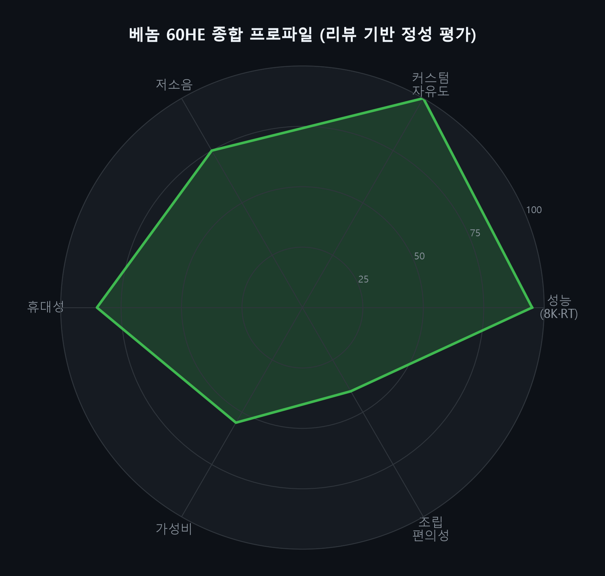
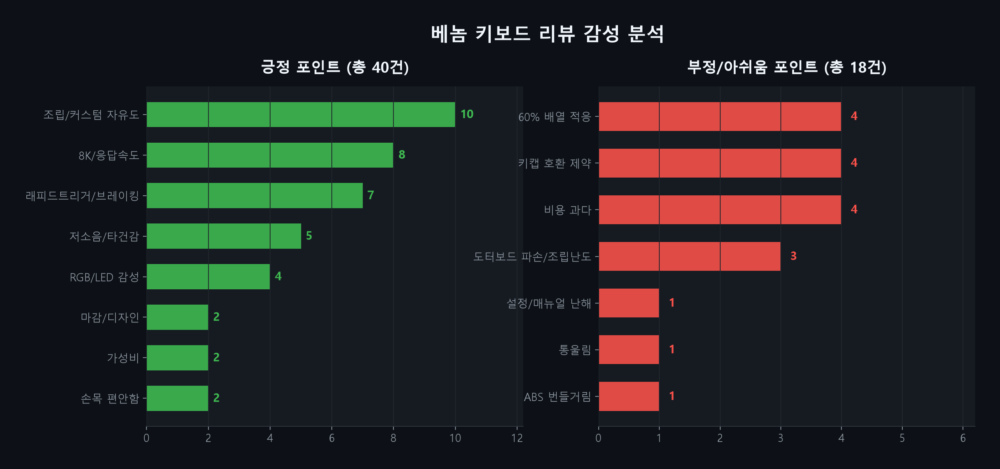
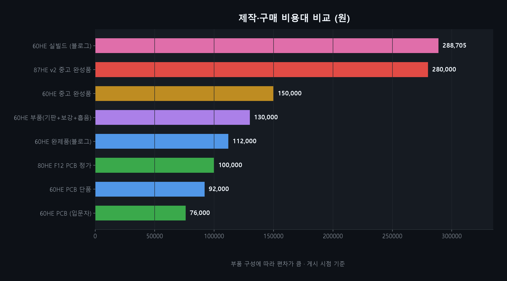
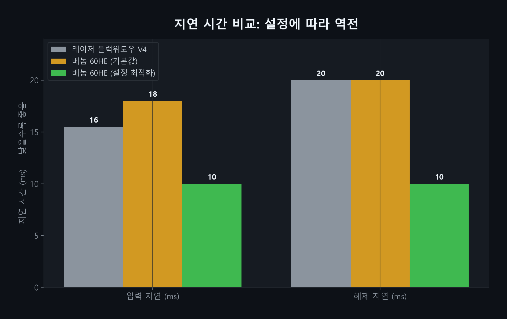

Geonworks VENOM HE (60HE / 80HE / 87HE) — 실제 사용자 리뷰 23건 기반 성능·가격·장단점 분석
베놈의 핵심은 지온웍스의 자석축(Hall Effect) PCB 기판. 하우징·보강판·스위치·키캡을 사용자가 선택해 조립한다.
60% (61키) · 6.25U/7U
FPS 최우선, 커스텀 자유도 최대, 휴대성 우수
TKL (87키) · F12
방향키 포함, 게임+일상 겸용, 타이거라이트 인기
60% · 응답 0.13ms
성능·감성 균형, 야간 LED 시인성 강화
교체 가능한 GH60 호환 하우징 · 웹 기반 venom.how 설정·펌웨어 업데이트 · 공방 주문제작 생태계 활발
기본 설정에서는 일반 게이밍 키보드보다 느릴 수 있음(입력지연 17~19ms). 입력지점·래피드트리거를 적극 설정해야 성능이 발휘된다.


긍정은 조립/커스텀 자유도(10)·8K(8)·래피드트리거(7) 순. 부정은 60% 배열 적응·키캡 호환·비용 과다(각 4)가 대표적.

“이동키 입력 해제 속도”가 브레이킹 체감을 바꾼다 — happygamer7966, 총 지출 288,705원

→ “수치상 최강”과 “체감 차이는 조건부”가 공존. 설정 최적화가 결과를 좌우한다.
“이동키 입력이 얼마나 빠르게 해제되느냐에 따라 브레이킹 체감이 달라진다. 기존 키보드보다 확실히 체감됐다.”
“J12 도터보드를 빼서 꾹 눌렀더니 분리가 났다. 처음 하시는 분들 이런 실수 하지 말길.”
“매뉴얼이 간단해 초보자가 펌웨어·레이어 설정 시 추가 학습이 필요하다. RGB 메뉴도 직관적이지 않다.”
“우팅 대비 약 1ms 빠름. 성능·소프트웨어 비판할 게 없다. 다만 키보드 입력은 수확체감 영역.”
| 예산 | 구성 | 예상 비용 | 대상 |
|---|---|---|---|
| 최소 | PCB + 저가 GH60 하우징 + 기존 부품 재사용 | 13~16만 | 부품 보유 커스텀러 |
| 균형 (권장) | PCB + FR4/알루 보강판 + RAW HE + 중급 키캡 | 20~23만 | 입문~중급 |
| 프리미엄 | Tofu60 Redux 알루 + 고급 키캡 + 공방 조립 | 28~30만 | 완성도 중시 |
| 간편 | 80HE F12 PCB + 타이거라이트 키트 | 10만대 | 방향키 필요 |
키캡 교체 편의 → 6.25U / 감성·미학 → 7U(조립난도↑)
FPS 몰입·휴대 → 60HE / 방향키·일상 → TKL
입력지점 0.1~0.2mm부터 / 도터보드 무리한 압착 금지
8kHz·0.13ms는 수치상 최강이지만 설정·스위치·마운트에 따라 체감이 갈린다.
만족도는 부품 선택과 조립 품질에서 결정. 커스텀을 즐기는 사용자에게 최적.
20~30만 원 지출과 조립 리스크. 입문자는 완성품·중고·공방이 현실적 대안.
60% 배열 적응 문제 반복 지적 → 방향키 활용도 높으면 80/87HE가 안전.
한 줄 결론 — FPS 성능과 커스텀 자유도를 동시에 원하는 경험자에게 최상위 후보. 단, 첫 조립은 공식 가이드와 리스크 관리가 전제.
본 자료는 공개 리뷰를 수집·요약한 참고용이며, 특정 구매를 권유하지 않습니다.
ojinbyeol · happygamer7966 · jrjrjr5562 · ballay58 · panjulove · ebrkhgyxwg · 717582 · legend1024 · tomeno00 · yonghoonplz(×2)
번개장터(리오제작소·87HE v2) · 글로벌번개장터(RGB V2)
boardzy(YouTube) · Vortex Gaming · 코스티COSTI · Begin's Blog · RTINGS · 퀘이사존 · thaian
원문 URL 22건 전체는 대시보드 HTML venom_keyboard_reviews.html 참고
베놈 키보드 상품리뷰 조사 — 데이터·시각화·보고서 연계 산출물
venom_keyboard_reviews.csv (23건)
venom_keyboard_reviews.html
venom_keyboard_review_report.md